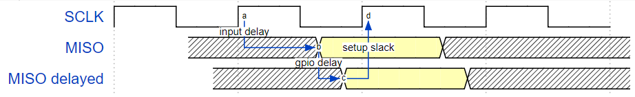
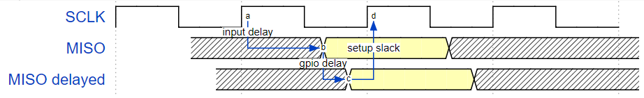
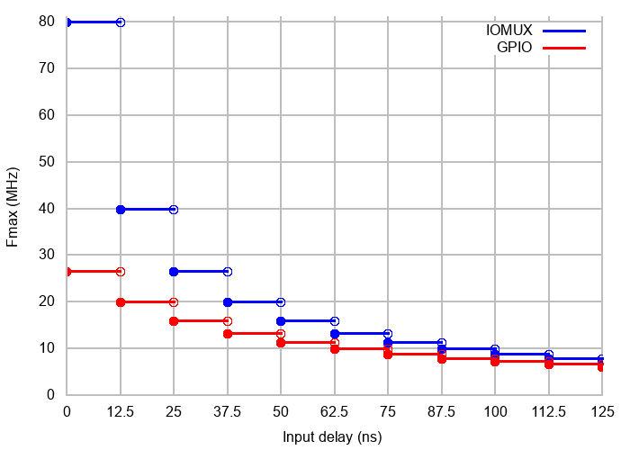

SPI-ის მთავარი დრაივერი¶
SPI Master დრაივერი არის პროგრამა, რომელიც აკონტროლებს ESP32-ის SPI პერიფერიულ მოწყობილობებს, სანამ ისინი ფუნქციონირებენ როგორც მთავარი მოწყობილობები.
ESP32-ის SPI პერიფერიული მოწყობილობების მიმოხილვა¶
ESP32 აერთიანებს ოთხ SPI პერიფერიულ მოწყობილობას.
- SPI0 და SPI1 შიდა გამოყენებისაა ESP32-ის მიერთებულ ფლეშ მეხსიერება მეხსიერებაზე წვდომისთვის და ამიტომ ამჟამად მომხმარებლებისთვის მიუწვდომელია. ისინი არბიტრის მეშვეობით ერთ სიგნალის ავტობუსს იყენებენ.
- SPI2 და SPI3 ზოგადი დანიშნულების SPI კონტროლერებია, რომლებსაც ზოგჯერ შესაბამისად HSPI და VSPI-საც უწოდებენ. ისინი მომხმარებლებისთვის ხელმისაწვდომია. SPI2-სა და SPI3-ს აქვთ დამოუკიდებელი სიგნალის ავტობუსები ერთი და იგივე სახელწოდებებით. თითოეულ ავტობუსს აქვს სამი CS ხაზი სამ SPI მონა-კონტროლერის სამართავად.
ტერმინოლოგია¶
SPI მთავარ დრაივერთან დაკავშირებით გამოყენებული ტერმინები მოცემულია ქვემოთ მოცემულ ცხრილში.
| ტერმინი | განმარტება |
|---|---|
| მასპინძელი | ESP32-ის შიგნით არსებული SPI კონტროლერის პერიფერიული მოწყობილობა, რომელიც იწყებს SPI გადაცემებს ავტობუსის მეშვეობით და მოქმედებს როგორც SPI Master. ეს შეიძლება იყოს SPI2 ან SPI3 პერიფერიული მოწყობილობა. (დრაივერი მომავალში ასევე მხარს დაუჭერს SPI1 პერიფერიულ მოწყობილობას.) |
| მოწყობილობა | SPI მონა მოწყობილობა. SPI ავტობუსი შეიძლება დაკავშირებული იყოს ერთ ან რამდენიმე მოწყობილობასთან. თითოეული მოწყობილობა იზიარებს MOSI, MISO და SCLK სიგნალებს, მაგრამ აქტიურია ავტობუსზე მხოლოდ მაშინ, როდესაც მასპინძელი ადასტურებს მოწყობილობის ინდივიდუალურ CS ხაზს. |
| ავტობუსი | სიგნალის ავტობუსი, რომელიც საერთოა ერთ ჰოსტთან დაკავშირებული ყველა მოწყობილობისთვის. ზოგადად, ავტობუსი მოიცავს შემდეგ ხაზებს: MISO, MOSI, SCLK, ერთი ან მეტი CS ხაზი და, სურვილისამებრ, QUADWP და QUADHD. ამგვარად, მოწყობილობები დაკავშირებულია ერთსა და იმავე ხაზებთან, გარდა იმისა, რომ თითოეულ მოწყობილობას აქვს საკუთარი CS ხაზი. რამდენიმე მოწყობილობას ასევე შეუძლია ერთი CS ხაზის გაზიარება, თუ ის დაკავშირებულია ჩარტის მეთოდით. |
|
Master In, Slave Out, ასევე Q. მონაცემთა გადაცემა მოწყობილობიდან ჰოსტზე. |
|
Master Out, Slave In, ასევე D. მონაცემთა გადაცემა ჰოსტიდან მოწყობილობაზე. |
|
სერიული საათი. ჰოსტის მიერ გენერირებული რხევითი სიგნალი, რომელიც მონაცემთა ბიტების გადაცემას სინქრონულად ინარჩუნებს. |
|
ჩიპის შერჩევა. საშუალებას აძლევს მასპინძელს აირჩიოს ავტობუსთან დაკავშირებული ინდივიდუალური მოწყობილობა(ები) მონაცემების გასაგზავნად ან მისაღებად. |
|
ჩაწერის დაცვის სიგნალი. გამოიყენება მხოლოდ 4-ბიტიანი (qio/qout) ტრანზაქციებისთვის. |
|
შეკავების სიგნალი. გამოიყენება მხოლოდ 4-ბიტიანი (qio/qout) ტრანზაქციებისთვის. |
|
ხაზის გააქტიურების მოქმედება. საპირისპირო მოქმედება, ხაზის არააქტიურ მდგომარეობაში დაბრუნება (უკან უმოქმედო მდგომარეობაში), ეწოდება დე-დარწმუნება. |
| ტრანზაქცია | ერთი შემთხვევა, როდესაც ჰოსტი ადასტურებს CS ხაზს, გადასცემს მონაცემებს მოწყობილობაზე და მოწყობილობადან და შემდეგ ხსნის CS ხაზს. ტრანზაქციები ატომურია, რაც ნიშნავს, რომ მათი შეწყვეტა სხვა ტრანზაქციით არასდროს შეიძლება. |
| გაშვების კიდე | საათის ის კიდე, რომელზეც წყაროს რეგისტრია გაშვება სიგნალი ხაზზე. |
| საკეტის კიდე | საათის ის კიდე, რომელზეც დანიშნულების რეგისტრი ფიქსირდება იკეტება სიგნალი. |
დრაივერის მახასიათებლები¶
SPI მთავარი დრაივერი არეგულირებს ჰოსტებსა და მოწყობილობებს შორის კომუნიკაციას. დრაივერი მხარს უჭერს შემდეგ ფუნქციებს:
- მრავალძაფიანი გარემო
- DMA გადაცემების გამჭვირვალე დამუშავება მონაცემების წაკითხვისა და ჩაწერის დროს
- იმავე სიგნალის ავტობუსზე სხვადასხვა მოწყობილობიდან მომავალი მონაცემების ავტომატური დროის გაყოფის მულტიპლექსირება
გაფრთხილება
SPI მასტერ დრაივერს აქვს კონცეფცია, რომელიც გულისხმობს ერთ ავტობუსთან დაკავშირებული მრავალი მოწყობილობის არსებობას (რომლებიც იზიარებენ ერთ ESP32 SPI პერიფერიულ პერიფერიას). სანამ თითოეულ მოწყობილობაზე წვდომა მხოლოდ ერთი დავალებით ხდება, დრაივერი უსაფრთხოა. თუმცა, თუ მრავალი დავალება ცდილობს ერთსა და იმავე SPI მოწყობილობაზე წვდომას, დრაივერი უსაფრთხოა. ძაფებისთვის უსაფრთხო არ არისამ შემთხვევაში, რეკომენდებულია შემდეგი:
- შეცვალეთ თქვენი აპლიკაცია ისე, რომ თითოეულ SPI პერიფერიულ პერიფერიაზე წვდომა ერთდროულად მხოლოდ ერთი დავალებით იყოს შესაძლებელი.
- დაამატეთ mutex lock გაზიარებული მოწყობილობის გარშემო გამოყენებით
xSemaphoreCreateMutex.
SPI ტრანზაქციები¶
SPI ავტობუსის ტრანზაქცია ხუთი ფაზისგან შედგება, რომელთა პოვნა ქვემოთ მოცემულ ცხრილშია შესაძლებელი. ამ ფაზებიდან ნებისმიერის გამოტოვება შესაძლებელია.
| ფაზა | აღწერა |
|---|---|
| ბრძანება | ამ ფაზაში, მასპინძელი ავტობუსში იწერს ბრძანებას (0-16 ბიტიანი). |
| მისამართი | ამ ფაზაში, მისამართი (0-64 ბიტი) გადაეცემა ჰოსტს ავტობუსის მეშვეობით. |
| დაწერა | მასპინძელი მონაცემებს მოწყობილობას უგზავნის. ეს მონაცემები მიჰყვება ბრძანებისა და მისამართის ფაზებს და ელექტრულ დონეზე მათგან განურჩეველია. |
| მანეკენი | ეს ფაზა კონფიგურირებადია და გამოიყენება დროის მოთხოვნების დასაკმაყოფილებლად. |
| წაკითხვა | მოწყობილობა მონაცემებს თავის ჰოსტს უგზავნის. |
ტრანზაქციის ატრიბუტები განისაზღვრება ავტობუსის კონფიგურაციის სტრუქტურით. spi_bus_config_t, მოწყობილობის კონფიგურაციის სტრუქტურა spi_device_interface_config_tდა ტრანზაქციის კონფიგურაციის სტრუქტურა spi_transaction_t.
SPI ჰოსტს შეუძლია სრული დუპლექსური ტრანზაქციების გაგზავნა, რომლის დროსაც წაკითხვისა და ჩაწერის ფაზები ერთდროულად ხდება. ტრანზაქციის მთლიანი სიგრძე განისაზღვრება შემდეგი წევრების ჯამით:
spi_device_interface_config_t::command_bitsspi_device_interface_config_t::address_bitsspi_transaction_t::length
სანამ წევრი spi_transaction_t::rxlength განსაზღვრავს მხოლოდ ბუფერში მიღებული მონაცემების სიგრძეს.
ნახევრად დუპლექსურ ტრანზაქციებში, წაკითხვისა და ჩაწერის ფაზები ერთდროულად არ ხდება (ერთდროულად ერთი მიმართულებით). ჩაწერისა და წაკითხვის ფაზების ხანგრძლივობა განისაზღვრება შემდეგით: length და rxlength სტრუქტურის წევრები spi_transaction_t შესაბამისად.
ბრძანებისა და მისამართის ფაზები არჩევითია, რადგან ყველა SPI მოწყობილობას არ სჭირდება ბრძანება და/ან მისამართი. ეს აისახება მოწყობილობის კონფიგურაციაში: თუ command_bits და/ან address_bits ნულზე დაყენების შემთხვევაში, ბრძანების ან მისამართის ფაზა არ განხორციელდება.
წაკითხვისა და ჩაწერის ფაზები ასევე შეიძლება იყოს არჩევითი, რადგან ყველა ტრანზაქცია არ მოითხოვს მონაცემების როგორც ჩაწერას, ასევე წაკითხვას. თუ rx_buffer არის NULL და SPI_TRANS_USE_RXDATA არ არის დაყენებული, წაკითხვის ფაზა გამოტოვებულია. თუ tx_buffer არის NULL და SPI_TRANS_USE_TXDATA თუ არ არის დაყენებული, ჩაწერის ფაზა გამოტოვებულია.
დრაივერი მხარს უჭერს ორი ტიპის ტრანზაქციას: შეწყვეტის ტრანზაქციებს და გამოკითხვის ტრანზაქციებს. პროგრამისტს შეუძლია აირჩიოს თითოეული მოწყობილობისთვის განსხვავებული ტრანზაქციის ტიპის გამოყენება. თუ თქვენს მოწყობილობას ორივე ტიპის ტრანზაქცია სჭირდება, იხილეთ შენიშვნები შერეული ტრანზაქციების ერთ მოწყობილობაზე გაგზავნის შესახებ.
ტრანზაქციების შეწყვეტა¶
შეწყვეტილი ტრანზაქციები დაბლოკავს ტრანზაქციის რუტინას ტრანზაქციის დასრულებამდე, რითაც CPU-ს სხვა დავალებების შესრულების საშუალებას მისცემს.
აპლიკაციის დავალებას შეუძლია რამდენიმე ტრანზაქციის რიგში დაყენება და დრაივერი ავტომატურად დაამუშავებს მათ ერთმანეთის მიყოლებით შეწყვეტის სერვისის რუტინაში (ISR). ეს საშუალებას აძლევს დავალებას გადავიდეს სხვა პროცედურებზე მანამ, სანამ ყველა ტრანზაქცია არ დასრულდება.
გამოკითხვის ტრანზაქციები¶
გამოკითხვის ტრანზაქციები არ იყენებენ შეფერხებებს. რუტინა აგრძელებს SPI მასპინძლის სტატუსის ბიტის გამოკითხვას ტრანზაქციის დასრულებამდე.
ყველა დავალება, რომელიც იყენებს შეწყვეტის ტრანზაქციებს, შეიძლება დაიბლოკოს რიგის მიერ. ამ ეტაპზე, მათ მოუწევთ ორჯერ დაელოდონ ISR-ის გაშვებას ტრანზაქციის დასრულებამდე. ტრანზაქციების გამოკითხვა ზოგავს დროს, რომელიც სხვაგვარად დაიხარჯება რიგის დამუშავებასა და კონტექსტის გადართვაზე, რაც იწვევს ტრანზაქციების ინტერვალების შემცირებას. ნაკლი ის არის, რომ ცენტრალური პროცესორი დაკავებულია ამ ტრანზაქციების მიმდინარეობისას.
ის spi_device_polling_end() რუტინას სჭირდება მინიმუმ 1 აშშ-ის ოვერჰედი, რათა ტრანზაქციის დასრულების შემდეგ სხვა დავალებები განბლოკოს. მკაცრად რეკომენდებულია გამოკითხვის ტრანზაქციების სერიის შეკვრა ფუნქციების გამოყენებით. spi_device_acquire_bus() და spi_device_release_bus() ზედნადები ხარჯების თავიდან ასაცილებლად. დამატებითი ინფორმაციისთვის იხილეთ ავტობუსების შეძენა.
ბრძანებისა და მისამართის ფაზები¶
ბრძანებისა და მიმართვის ფაზების დროს, წევრები cmd და addr სტრუქტურაში spi_transaction_t იგზავნება ავტობუსში, ამ დროს არაფერი იკითხება. ბრძანებისა და მისამართის ფაზების ნაგულისხმევი სიგრძეები დაყენებულია spi_device_interface_config_t დარეკვით spi_bus_add_device()თუ დროშები SPI_TRANS_VARIABLE_CMD და SPI_TRANS_VARIABLE_ADDR წევრში spi_transaction_t::flags თუ არ არის დაყენებული, დრაივერი მოწყობილობის ინიციალიზაციისას ავტომატურად აყენებს ამ ფაზების ხანგრძლივობას ნაგულისხმევ მნიშვნელობებზე.
თუ ბრძანებისა და მისამართის ფაზების სიგრძეები ცვლადი უნდა იყოს, გამოაცხადეთ სტრუქტურა spi_transaction_ext_t, დროშების დაყენება SPI_TRANS_VARIABLE_CMD და/ან SPI_TRANS_VARIABLE_ADDR წევრში spi_transaction_ext_t::base და ბაზის დანარჩენი ნაწილი ჩვეულებრივად დააკონფიგურირეთ. შემდეგ თითოეული ფაზის ხანგრძლივობა ტოლი იქნება command_bits და address_bits სტრუქტურაში დაყენება spi_transaction_ext_t.
ჩაწერისა და წაკითხვის ფაზები¶
ჩვეულებრივ, მოწყობილობაზე ან მოწყობილობადან გადასატანი მონაცემები იკითხება ან ჩაიწერება მეხსიერების იმ ნაწილზე, რომელიც წევრების მიერ არის მითითებული. rx_buffer და tx_buffer სტრუქტურის spi_transaction_tთუ DMA ჩართულია გადარიცხვებისთვის, ბუფერები უნდა იყოს:
- გამოყოფილია DMA-თავსებად შიდა მეხსიერებაში. თუ გარე PSRAM ჩართულია, ეს ნიშნავს გამოყენებას
pvPortMallocCaps(size, MALLOC_CAP_DMA).- 32-ბიტიანი გასწორებული (32-ბიტიანი საზღვრიდან დაწყებული და 4 ბაიტის ჯერადი სიგრძის მქონე).
თუ ეს მოთხოვნები არ დაკმაყოფილდება, ტრანზაქციის ეფექტურობაზე გავლენას მოახდენს დროებითი ბუფერების გამოყოფა და კოპირება.
შენიშვნა
DMA-ს გამოყენებისას, როგორც წაკითხვის, ასევე ჩაწერის ფაზებით ნახევრად დუპლექსური ტრანზაქციები არ არის მხარდაჭერილი. დეტალებისა და შემოვლითი გზებისთვის იხილეთ. ცნობილი პრობლემები.
ავტობუსების შეძენა¶
ზოგჯერ შეიძლება დაგჭირდეთ SPI ტრანზაქციების ექსკლუზიურად და უწყვეტად გაგზავნა, რათა რაც შეიძლება ნაკლები დრო დასჭირდეს. ამისათვის შეგიძლიათ გამოიყენოთ ავტობუსის მოძიება, რომელიც ხელს უწყობს ტრანზაქციების (როგორც გამოკითხვის, ასევე შეწყვეტის) სხვა მოწყობილობებზე შეჩერებას ავტობუსის გათავისუფლებამდე. ავტობუსის მოძიებისა და გათავისუფლებისთვის გამოიყენეთ ფუნქციები spi_device_acquire_bus() და spi_device_release_bus().
დრაივერის გამოყენება¶
SPI ავტობუსის ინიციალიზაცია ფუნქციის გამოძახებით
spi_bus_initialize()დარწმუნდით, რომ სტრუქტურაში სწორი შემავალი/გამომავალი კონექტორებია დაყენებული.spi_bus_config_tდააყენეთ არასაჭირო სიგნალები-1.ფუნქციის გამოძახებით, მძღოლთან ავტობუსთან დაკავშირებული მოწყობილობის რეგისტრაცია
spi_bus_add_device()დარწმუნდით, რომ პარამეტრით დააკონფიგურირეთ მოწყობილობისთვის საჭირო ნებისმიერი დროის მოთხოვნა.dev_configახლა თქვენ უნდა მიიღოთ მოწყობილობის სახელური, რომელიც გამოყენებული იქნება მასზე ტრანზაქციის გაგზავნისას.მოწყობილობასთან ურთიერთქმედებისთვის, შეავსეთ ერთი ან მეტი
spi_transaction_tსტრუქტურები ნებისმიერი საჭირო ტრანზაქციის პარამეტრით. შემდეგ გაგზავნეთ სტრუქტურები გამოკითხვის ტრანზაქციის ან შეწყვეტის ტრანზაქციის გამოყენებით:- შეწყვეტა
- Either queue all transactions by calling the function
spi_device_queue_trans()and, at a later time, query the result using the functionspi_device_get_trans_result(), or handle all requests synchronously by feeding them intospi_device_transmit().
- გამოკითხვა
- Call the function
spi_device_polling_transmit()to send polling transactions. Alternatively, if you want to insert something in between, send the transactions by usingspi_device_polling_start()andspi_device_polling_end().
(არასავალდებულო) მოწყობილობასთან ზედიზედ ტრანზაქციების შესასრულებლად, გამოიძახეთ ფუნქცია
spi_device_acquire_bus()ტრანზაქციების გაგზავნამდე დაspi_device_release_bus()ტრანზაქციების გაგზავნის შემდეგ.(არასავალდებულო) კონკრეტული მოწყობილობის დრაივერის გადმოსატვირთად, დარეკეთ
spi_bus_remove_device()მოწყობილობის სახელურით, როგორც არგუმენტით.(არასავალდებულო) ავტობუსიდან მძღოლის მოსაშორებლად, დარწმუნდით, რომ სხვა მძღოლები არ არიან მიმაგრებულნი და დარეკეთ
spi_bus_free().
SPI მთავარი დრაივერის მაგალითის კოდი შეგიძლიათ იხილოთ შემდეგში: პერიფერიული მოწყობილობები/spi_master ESP-IDF მაგალითების დირექტორია.
ტრანზაქციები მონაცემებთან, რომელთა სიგრძე არ აღემატება 32 ბიტს¶
როდესაც ტრანზაქციის მონაცემების ზომა 32 ბიტის ტოლია ან ნაკლებია, მონაცემებისთვის ბუფერის გამოყოფა არაოპტიმალური იქნება. მონაცემების პირდაპირ შენახვა შესაძლებელია ტრანზაქციის სტრუქტურაში. გადაცემული მონაცემებისთვის ეს შეიძლება მიღწეული იქნას შემდეგი სქემის გამოყენებით: tx_data წევრი და დაყენება SPI_TRANS_USE_TXDATA გადაცემაზე დროშა. მიღებული მონაცემებისთვის გამოიყენეთ rx_data და დააყენე SPI_TRANS_USE_RXDATAორივე შემთხვევაში, არ შეეხოთ tx_buffer ან rx_buffer წევრები, რადგან ისინი იყენებენ იგივე მეხსიერების ადგილებს, როგორც tx_data და rx_data.
ტრანზაქციები მთელ რიცხვებთან, გარდა uint8_t¶
SPI ჰოსტი მონაცემებს მეხსიერებაში ბაიტ-ბაიტად კითხულობს და წერს. ნაგულისხმევად, მონაცემები იგზავნება ყველაზე მნიშვნელოვანი ბიტით (MSB) პირველი, რადგან იშვიათ შემთხვევებში პირველად LSB გამოიყენება. თუ საჭიროა 8 ბიტზე ნაკლები მნიშვნელობის გაგზავნა, ბიტები მეხსიერებაში უნდა ჩაიწეროს MSB-ის პირველი მეთოდით.
მაგალითად, თუ 0b00010 უნდა გაიგზავნოს, ის უნდა ჩაიწეროს uint8_t ცვლადია და წაკითხვის სიგრძე 5 ბიტზე უნდა იყოს დაყენებული. მოწყობილობა მაინც მიიღებს 8 ბიტს 3 დამატებით „შემთხვევით“ ბიტთან ერთად, ამიტომ წაკითხვა სწორად უნდა შესრულდეს.
ამასთანავე, ESP32 არის პატარა ენდიანის ჩიპი, რაც ნიშნავს, რომ ყველაზე ნაკლებად მნიშვნელოვანი ბაიტი uint16_t და uint32_t ცვლადები ინახება ყველაზე მცირე მისამართზე. შესაბამისად, თუ uint16_t მეხსიერებაში ინახება, ჯერ იგზავნება ბიტები [7:0], შემდეგ კი ბიტები [15:8].
იმ შემთხვევებისთვის, როდესაც გადასაცემი მონაცემების ზომა განსხვავდება uint8_t მასივებისთვის, შემდეგი მაკროების გამოყენება შესაძლებელია მონაცემების იმ ფორმატში გარდასაქმნელად, რომლის გაგზავნაც პირდაპირ SPI დრაივერის მიერ არის შესაძლებელი:
SPI_SWAP_DATA_TXმონაცემების გადასაცემადSPI_SWAP_DATA_RXმიღებული მონაცემებისთვის
შენიშვნები შერეული ტრანზაქციების ერთ მოწყობილობაზე გაგზავნის შესახებ¶
კოდირების სირთულის შესამცირებლად, ერთ მოწყობილობაზე გაგზავნეთ მხოლოდ ერთი ტიპის ტრანზაქცია (შეფერხება ან გამოკითხვა). თუმცა, თქვენ მაინც შეგიძლიათ მონაცვლეობით გაგზავნოთ როგორც შეფერხების, ასევე გამოკითხვის ტრანზაქციები. ქვემოთ მოცემული შენიშვნები განმარტავს, თუ როგორ უნდა გააკეთოთ ეს.
გამოკითხვის ტრანზაქციები უნდა დაიწყოს მხოლოდ ყველა გამოკითხვისა და შეწყვეტის ტრანზაქციის დასრულების შემდეგ.
რადგან დაუმთავრებელი გამოკითხვის ტრანზაქცია სხვა ტრანზაქციებს ბლოკავს, გთხოვთ, არ დაგავიწყდეთ ფუნქციის გამოძახება spi_device_polling_end() შემდეგ spi_device_polling_start() სხვა ტრანზაქციების ან სხვა მოწყობილობების მიერ ავტობუსის გამოყენების ნებართვის მისაცემად. გახსოვდეთ, რომ თუ თქვენი კენჭისყრის ტრანზაქციის დროს სხვა ამოცანებზე გადართვა საჭირო არ არის, ტრანზაქციის ინიცირება შეგიძლიათ spi_device_polling_transmit() რათა ის ავტომატურად დასრულდეს.
ფრენის დროს კენჭისყრის ტრანზაქციები შეფერხებულია ISR ოპერაციის მიერ შეფერხებული ტრანზაქციების დასაკმაყოფილებლად. ყოველთვის დარწმუნდით, რომ ISR-ში გაგზავნილი ყველა შეფერხების ტრანზაქცია დასრულებულია, სანამ დარეკავთ. spi_device_polling_start(). ამისათვის შეგიძლიათ გააგრძელოთ ზარი spi_device_get_trans_result() სანამ ყველა ტრანზაქცია არ დაბრუნდება.
ფუნქციების გამოძახების თანმიმდევრობის უკეთ კონტროლისთვის, შერეული ტრანზაქციები ერთსა და იმავე მოწყობილობაზე მხოლოდ ერთი დავალების ფარგლებში გაგზავნეთ.
GPIO მატრიცა და IO_MUX¶
ESP32-ის პერიფერიული სიგნალების უმეტესობას პირდაპირი კავშირი აქვს მათ IO_MUX პინებთან. თუმცა, სიგნალების გადამისამართება ასევე შესაძლებელია ნებისმიერ სხვა ხელმისაწვდომ პინზე ნაკლებად პირდაპირი GPIO მატრიცის გამოყენებით. თუ ერთი სიგნალი მაინც გაივლის GPIO მატრიცის გავლით, მაშინ ყველა სიგნალი გაივლის მასში.
GPIO მატრიცა შემოაქვს მარშრუტიზაციის მოქნილობა, მაგრამ ასევე მოაქვს შემდეგი ნაკლოვანებები:
- ზრდის MISO სიგნალის შეყვანის დაყოვნებას, რაც MISO-ს დაყენების დროის დარღვევის ალბათობას ზრდის. თუ SPI-ს მაღალი სიჩქარით მუშაობა სჭირდება, გამოიყენეთ სპეციალური IO_MUX პინები.
- საშუალებას იძლევა სიგნალების გადაცემა მხოლოდ 40 MHz-მდე საათის სიხშირით, 80 MHz-ისგან განსხვავებით, თუ გამოიყენება IO_MUX პინები.
შენიშვნა
MISO შეყვანის შეფერხების მაქსიმალურ საათის სიხშირეზე გავლენის შესახებ დამატებითი ინფორმაციისთვის იხილეთ დროის საკითხები.
SPI ავტობუსების IO_MUX პინები მოცემულია ქვემოთ.
| PIN-ის სახელი | SPI2 | SPI3 |
|---|---|---|
| GPIO ნომერი | ||
| CS0* | 15 | 5 |
| SCLK | 14 | 18 |
| მისო | 12 | 19 |
| მოსი | 13 | 23 |
| QUADWP | 2 | 22 |
| კვადროციკლი | 4 | 21 |
- მხოლოდ ავტობუსზე მიერთებულ პირველ მოწყობილობას შეუძლია CS0 პინის გამოყენება.
გადაცემის სიჩქარის გასათვალისწინებელი ფაქტორები¶
გადაცემის სიჩქარეს სამი ფაქტორი ზღუდავს:
- ტრანზაქციის ინტერვალი
- SPI საათის სიხშირე
- SPI ფუნქციების ქეშის დაკარგვა, მათ შორის უკუკავშირის ჩათვლით
დიდი ტრანზაქციების გადაცემის სიჩქარის განმსაზღვრელი მთავარი პარამეტრი საათის სიხშირეა. რამდენიმე მცირე ტრანზაქციის შემთხვევაში, გადაცემის სიჩქარე ძირითადად განისაზღვრება ტრანზაქციების ინტერვალების ხანგრძლივობით.
ტრანზაქციის ინტერვალი¶
ტრანზაქციის ინტერვალი არის დრო, რომელიც პროგრამულ უზრუნველყოფას სჭირდება SPI პერიფერიული რეგისტრების დასაყენებლად და მონაცემების FIFO-ებში კოპირებისთვის, ან DMA ბმულების დასაყენებლად.
შეწყვეტის ტრანზაქციები საშუალებას იძლევა დამატებითი ზედნადები დაწესდეს, რათა გათვალისწინებულ იქნას Free RTOS რიგების ღირებულება და ამოცანებსა და ISR-ს შორის გადართვისთვის საჭირო დრო.
ამისთვის ტრანზაქციების შეწყვეტატრანზაქციის მიმდინარეობისას ცენტრალურ პროცესორს შეუძლია სხვა დავალებებზე გადართვა. ეს ზოგავს ცენტრალურ პროცესორს დროს, მაგრამ ზრდის ინტერვალს. იხილეთ ტრანზაქციების შეწყვეტა. ამისთვის გამოკითხვის ტრანზაქციები, ის არ ბლოკავს დავალებას, მაგრამ საშუალებას იძლევა ჩატარდეს გამოკითხვა, როდესაც ტრანზაქცია მიმდინარეობს. დამატებითი ინფორმაციისთვის იხილეთ გამოკითხვის ტრანზაქციები.
თუ DMA ჩართულია, დაკავშირებული სიის დაყენებას დაახლოებით 2 აშშ დოლარი სჭირდება თითო ტრანზაქციაზე. როდესაც მასტერ-პროცესორი მონაცემებს გადასცემს, ის ავტომატურად კითხულობს მონაცემებს დაკავშირებული სიიდან. თუ DMA არ არის ჩართული, CPU-მ FIFO-დან თითოეული ბაიტი დამოუკიდებლად უნდა ჩაწეროს და წაიკითხოს. როგორც წესი, ეს 2 აშშ დოლარზე სწრაფია, მაგრამ ტრანზაქციის სიგრძე როგორც ჩაწერისთვის, ასევე წაკითხვისთვის 64 ბაიტით შემოიფარგლება.
მონაცემთა ერთი ბაიტისთვის ტრანზაქციის ინტერვალის ტიპური დრო მოცემულია ქვემოთ.
| ტრანზაქციის ტიპიური დრო (აშშ) | ||
|---|---|---|
| შეწყვეტა | გამოკითხვა | |
| DMA | 24 | 8 |
| DMA არ არის | 22 | 7 |
SPI საათის სიხშირე¶
თითოეული ბაიტის გადაცემას საათის პერიოდზე რვაჯერ მეტი დრო სჭირდება. 8/fspiთუ საათის სიხშირე ძალიან მაღალია, ზოგიერთი ფუნქციის გამოყენება შეიძლება შეზღუდული იყოს. იხილეთ დროის საკითხები.
ქეშის მის¶
ნაგულისხმევი კონფიგურაცია IRAM-ში მხოლოდ ISR-ს ათავსებს. სხვა SPI-სთან დაკავშირებული ფუნქციები, მათ შორის თავად დრაივერი და უკუკავშირი, შესაძლოა ქეშის შეცდომის გამო დაზარალდნენ და საჭირო იქნება კოდის ფლეშ მეხსიერება დან წაკითხვამდე ლოდინი. აირჩიეთ CONFIG_SPI_MASTER_IN_IRAM მთელი SPI დრაივერის IRAM-ში განთავსება და მთელი უკუკავშირის (უკუკავშირის) და მისი მიმღები ფუნქციების IRAM-ში განთავსება, ქეშის დაკარგვის თავიდან ასაცილებლად.
შეწყვეტილი ტრანზაქციისთვის, საერთო ღირებულებაა 20+8n/Fspi[MHz] [us] ერთ ტრანზაქციაში გადაცემული n ბაიტისთვის. შესაბამისად, გადაცემის სიჩქარეა: n/(20+8n/Fspi)8 MHz საათის სიხშირით გადაცემის სიჩქარის მაგალითი მოცემულია შემდეგ ცხრილში.
სიხშირე (MHz) |
ტრანზაქციის ინტერვალი (ჩვენ) |
ტრანზაქციის ხანგრძლივობა (ბაიტები) |
საერთო დრო (ჩვენ) |
სრული სიჩქარე (კბ/წმ) |
|---|---|---|---|---|
| 8 | 25 | 1 | 26 | 38.5 |
| 8 | 25 | 8 | 33 | 242.4 |
| 8 | 25 | 16 | 41 | 490.2 |
| 8 | 25 | 64 | 89 | 719.1 |
| 8 | 25 | 128 | 153 | 836.6 |
როდესაც ტრანზაქციის სიგრძე მოკლეა, ტრანზაქციის ინტერვალის ღირებულება მაღალია. თუ შესაძლებელია, შეეცადეთ რამდენიმე მოკლე ტრანზაქცია ერთ ტრანზაქციაში მოათავსოთ, რათა მიაღწიოთ უფრო მაღალ გადაცემის სიჩქარეს.
გთხოვთ გაითვალისწინოთ, რომ ISR სტანდარტულად გამორთულია ფლეშ მეხსიერება ოპერაციის დროს. ფლეშ მეხსიერება ოპერაციების დროს ტრანზაქციების გაგზავნის გასაგრძელებლად, ჩართეთ CONFIG_SPI_MASTER_ISR_IN_IRAM და დააყენე ESP_INTR_FLAG_IRAM წევრში spi_bus_config_t::intr_flagsამ შემთხვევაში, ფლეშ მეხსიერება ოპერაციების დაწყებამდე რიგში მდგომი ყველა ტრანზაქცია ISR-ის მიერ პარალელურად დამუშავდება. ასევე გაითვალისწინეთ, რომ თითოეული მოწყობილობისა და მათი მიმღები ფუნქციების უკუკავშირი IRAM-ში უნდა იყოს, წინააღმდეგ შემთხვევაში თქვენი უკუკავშირი ქეშის დაკარგვის გამო გაითიშება. დამატებითი ინფორმაციისთვის იხილეთ IRAM-უსაფრთხო შეფერხების დამმუშავებლები.
დროის საკითხები¶
როგორც ქვემოთ მოცემულ ფიგურაზეა ნაჩვენები, MISO ხაზზე SCLK-ის გაშვების კიდის შემდეგ და სიგნალის შიდა რეგისტრით დაბლოკვამდე არის შეფერხება. შედეგად, MISO პინის დაყენების დრო SPI საათის სიჩქარის შემზღუდველი ფაქტორია. როდესაც შეფერხება ძალიან გრძელია, დაყენების შეფერხება < 0-ია და დაყენების დროის მოთხოვნა ირღვევა, რაც იწვევს წაკითხვის სწორად შესრულების შეუძლებლობას.
 

მაქსიმალური დასაშვები სიხშირე დამოკიდებულია:
input_delay_ns- SCLK-ზე საათის ციკლის დაწყების შემდეგ MISO ავტობუსზე მონაცემების მაქსიმალური მოქმედების დრო- თუ გამოიყენება IO_MUX პინი ან GPIO მატრიცა
როდესაც გამოიყენება GPIO მატრიცა, მაქსიმალური დაშვებული სიხშირე მცირდება დაახლოებით 33~77%-მდე არსებულ მატრიცასთან შედარებით. შეყვანის დაყოვნებაუფრო მაღალი სიხშირის შესანარჩუნებლად, თქვენ უნდა გამოიყენოთ IO_MUX პინები ან უაზრო გამოსავალიფუნქციის გამოყენებით შეგიძლიათ მიიღოთ მასტერ-დისკის მაქსიმალური წაკითხვის სიხშირე spi_get_freq_limit().
ფიქტიური გამოსავალიფიქტიური საათების ჩასმა, რომლის დროსაც ჰოსტი მონაცემებს არ კითხულობს, შესაძლებელია წაკითხვის ფაზის დაწყებამდე. მოწყობილობა კვლავ ხედავს ფიქტიური საათებს და აგზავნის მონაცემებს, მაგრამ ჰოსტი არ კითხულობს წაკითხვის ფაზის დაწყებამდე. ეს ანაზღაურებს ჰოსტის მიერ საჭირო MISO დაყენების დროის ნაკლებობას და საშუალებას აძლევს ჰოსტს, წაიკითხოს უფრო მაღალი სიხშირით.
იდეალურ შემთხვევაში, თუ მოწყობილობა იმდენად სწრაფია, რომ შეყვანის დაყოვნება APB საათის ციკლზე - 12.5 ns-ზე ნაკლებია - მაქსიმალური სიხშირე, რომლითაც ჰოსტს შეუძლია წაკითხვა (ან წაკითხვა და ჩაწერა) სხვადასხვა პირობებში, შემდეგია:
| სიხშირის ლიმიტი (MHz) | მძღოლის მიერ გამოყენებული ფიქტიური ბიტები | კომენტარები | |
|---|---|---|---|
| GPIO მატრიცა | IO_MUX პინები | ||
| 26.6 | 80 | არა | |
| 40 | – | დიახ | ნახევრად დუპლექსი, DMA არ არის დაშვებული |
თუ ჰოსტი მხოლოდ მონაცემებს წერს, უაზრო გამოსავალი და სიხშირის შემოწმების გამორთვა შესაძლებელია ბიტის დაყენებით SPI_DEVICE_NO_DUMMY წევრში spi_device_interface_config_t::flagsგამორთვის შემთხვევაში, გამომავალი სიხშირე შეიძლება იყოს 80 MHz, მაშინაც კი, თუ გამოიყენება GPIO მატრიცა.
spi_device_interface_config_t::flags
SPI-ის მთავარ დრაივერს შეუძლია იმუშაოს მაშინაც კი, თუ input_delay_ns სტრუქტურაში spi_device_interface_config_t დაყენებულია 0-ზე. თუმცა, ზუსტი მნიშვნელობის დაყენება ხელს უწყობს:
- გამოთვალეთ სიხშირის ლიმიტი სრული დუპლექსური ტრანზაქციებისთვის
- ნახევრად დუპლექსური ტრანზაქციებისთვის დროის სწორად კომპენსირება ფიქტიური ბიტებით
SPI საათების გაშვების კიდის შემდეგ მაქსიმალური მონაცემთა მოქმედების დროის დაახლოებით განსაზღვრა შეგიძლიათ თქვენი მოწყობილობის სპეციფიკაციის AC მახასიათებლების თავში სტატისტიკის შემოწმებით ან დროის ოსცილოსკოპზე ან ლოგიკურ ანალიზატორზე გაზომვით.
გთხოვთ გაითვალისწინოთ, რომ PCB განლაგების ფაქტობრივმა დიზაინმა და ჭარბმა დატვირთვამ შეიძლება გაზარდოს შეყვანის დაყოვნება. ეს ნიშნავს, რომ არაოპტიმალური გაყვანილობა და/ან დატვირთვის კონდენსატორი ავტობუსზე, სავარაუდოდ, გამოიწვევს შეყვანის დაყოვნების მნიშვნელობების გადაჭარბებას მოწყობილობის სპეციფიკაციაში მოცემულ მნიშვნელობებზე ან გაზომვას ავტობუსში მოძრაობისას.
დაყოვნების რამდენიმე ტიპიური მნიშვნელობა ნაჩვენებია შემდეგ ცხრილში.
| მოწყობილობა | შეყვანის დაყოვნება (ns) |
|---|---|
| იდეალური მოწყობილობა | 0 |
| ESP32 მონა IO_MUX*-ის გამოყენებით | 50 |
| ESP32 მონა, რომელიც იყენებს GPIO _MUX*-ს | 75 |
| ESP32-ის მონა მოწყობილობა სხვა ფიზიკურ ჩიპზეა. | |
MISO გზის შეფერხება (ვალიდური დრო) შედგება მონა-მონაწილისგან. შეყვანის დაყოვნება პლუს მაგისტრატურა GPIO მატრიცის შეფერხებაეს შეფერხება განსაზღვრავს სიხშირის ლიმიტს, რომლის ზემოთაც სრული დუპლექსური გადაცემები არ იმუშავებს, ასევე ნახევრად დუპლექსურ ტრანზაქციებში გამოყენებულ ფიქტიურ ბიტებს. სიხშირის ლიმიტია:
სიხშირის ლიმიტი [MHz] = 80 / (სართული(MISO დაყოვნება[ns]/12.5) + 1)
ქვემოთ მოცემული სურათი გვიჩვენებს სიხშირის ლიმიტსა და შეყვანის დაყოვნებას შორის კავშირს. თუ მთავარი სიგნალის მმართველი იყენებს GPIO მატრიცას, MISO დაყოვნებას უნდა დაემატოს APB საათის ციკლის ორი დამატებითი პერიოდი.
შესაბამისი სიხშირის ლიმიტები სხვადასხვა მოწყობილობებისთვის სხვადასხვა შეყვანის დაყოვნება დროები ნაჩვენებია ქვემოთ მოცემულ ცხრილში.
| ოსტატი | შეყვანის დაყოვნება (ns) | MISO გზის შეფერხება (ns) | სიხშირის ლიმიტი (MHz) |
|---|---|---|---|
| IO_MUX (0ns) | 0 | 0 | 80 |
| 50 | 50 | 16 | |
| 75 | 75 | 11.43 | |
| GPIO (25 ns) | 0 | 25 | 26.67 |
| 50 | 75 | 11.43 | |
| 75 | 100 | 8.89 |
ცნობილი პრობლემები¶
ნახევრად დუპლექსური ტრანზაქციები არ არის თავსებადი DMA-სთან, როდესაც გამოიყენება როგორც ჩაწერის, ასევე წაკითხვის ფაზები.
თუ ასეთი ტრანზაქციები საჭიროა, თქვენ უნდა გამოიყენოთ ერთ-ერთი ალტერნატიული გადაწყვეტა:
ამის ნაცვლად გამოიყენეთ სრული დუპლექსური ტრანზაქციები.
DMA-ს გამორთვისთვის, ავტობუსის ინიციალიზაციის ფუნქციის ბოლო პარამეტრი 0-ზე დააყენეთ შემდეგნაირად:
ret=spi_bus_initialize(VSPI_HOST, &buscfg, 0);ამან შეიძლება შეგიშალოთ ხელი 64 ბაიტზე მეტი სიგრძის მონაცემების გადაცემასა და მიღებაში.
ჩაწერის ფაზის შესაცვლელად სცადეთ ბრძანებისა და მისამართის ველების გამოყენება.
სრული დუპლექსური ტრანზაქციები არ არის თავსებადი უაზრო გამოსავალი, შესაბამისად, სიხშირე შეზღუდულია. იხ. აჩქარების ფიქტიური გამოსავალი.
cs_ena_pretransარ არის თავსებადი სრული დუპლექსური ტრანზაქციების ბრძანებისა და მისამართის ფაზებთან.
განაცხადის მაგალითი¶
ESP32-WROVER-KIT-ის 320x240 LCD ეკრანზე გრაფიკის ჩვენების კოდის მაგალითი შეგიძლიათ იხილოთ შემდეგში: პერიფერიული მოწყობილობები/spi_master ESP-IDF მაგალითების დირექტორია.
API მითითება - SPI Common¶
სათაურის ფაილი¶
ჩამოთვლები¶
სათაურის ფაილი¶
ფუნქციები¶
-
esp_err_t
spi_bus_initialize(spi_host_device_t მასპინძელი, კონსტ spi_bus_config_t *ავტობუსის_კონფიგურაცია, int dma_chan)¶ SPI ავტობუსის ინიციალიზაცია.
- გაფრთხილება
- For now, only supports HSPI and VSPI.
- გაფრთხილება
- If a DMA channel is selected, any transmit and receive buffer used should be allocated in DMA-capable memory.
- გაფრთხილება
- The ISR of SPI is always executed on the core which calls this function. Never starve the ISR on this core or the SPI transactions will not be handled.
- დაბრუნება
- ESP_ERR_INVALID_ARG თუ კონფიგურაცია არასწორია
- ESP_ERR_INVALID_STATE თუ ჰოსტი უკვე გამოიყენება
- ESP_ERR_NO_MEM, თუ მეხსიერება ამოწურულია
- ESP_OK წარმატების შემთხვევაში
- პარამეტრები
hostSPI პერიფერიული მოწყობილობა, რომელიც აკონტროლებს ამ ავტობუსსbus_config: მაჩვენებელი a-ზე spi_bus_config_t სტრუქტურა, რომელიც განსაზღვრავს, თუ როგორ უნდა მოხდეს ჰოსტის ინიციალიზაციაdma_chan: ან არხი 1 ან 2, ან 0 იმ შემთხვევაში, თუ DMA არ არის საჭირო. SPI ავტობუსისთვის DMA არხის არჩევა საშუალებას იძლევა, ავტობუსზე გადაცემების ზომა მხოლოდ შიდა მეხსიერების მოცულობით იყოს შეზღუდული. DMA არხის არარსებობის შემთხვევაში (0 მნიშვნელობის გადაცემით) გადაცემული ბაიტების რაოდენობა მაქსიმუმ 64-მდე ზღუდავს. დააყენეთ 0-ზე, თუ ამ ავტობუსს მხოლოდ SPI ფლეშ მეხსიერება იყენებს.
-
esp_err_t
spi_bus_free(spi_host_device_t მასპინძელი)¶ უფასო SPI ავტობუსი.
- გაფრთხილება
- In order for this to succeed, all devices have to be removed first.
- დაბრუნება
- ESP_ERR_INVALID_ARG თუ პარამეტრი არასწორია
- ESP_ERR_INVALID_STATE, თუ ავტობუსში ყველა მოწყობილობა არ არის გათავისუფლებული
- ESP_OK წარმატების შემთხვევაში
- პარამეტრები
host: SPI პერიფერიული მოწყობილობა თავისუფალზე
სტრუქტურები¶
-
სტრუქტურა
spi_bus_config_t¶ ეს არის SPI ავტობუსის კონფიგურაციის სტრუქტურა.
ამ სტრუქტურის გამოყენება შეგიძლიათ ავტობუსის GPIO პინების დასაზუსტებლად. ჩვეულებრივ, დრაივერი სიგნალების გადასაცემად GPIO მატრიცას გამოიყენებს. გამონაკლისი ხდება მაშინ, როდესაც ყველა სიგნალის გადატანა შესაძლებელია IO_MUX-ის მეშვეობით ან არის -1. ამ შემთხვევაში, გამოიყენება IO_MUX, რომელიც 40 MHz-ზე მეტი სიჩქარის საშუალებას იძლევა.
- შენიშვნა
- Be advised that the slave driver does not use the quadwp/quadhd lines and fields in spi_bus_config_t refering to these lines will be ignored and can thus safely be left uninitialized.
საჯარო წევრები
-
int
mosi_io_num¶ GPIO პინი Master Out Slave In (=spi_d) სიგნალისთვის, ან -1, თუ არ გამოიყენება.
-
int
miso_io_num¶ GPIO პინი Master In Slave Out (=spi_q) სიგნალისთვის, ან -1, თუ არ გამოიყენება.
-
int
sclk_io_num¶ GPIO პინი Spi CLocK სიგნალისთვის, ან -1, თუ არ გამოიყენება.
-
int
quadwp_io_num¶ GPIO პინი WP (Write Protect) სიგნალისთვის, რომელიც გამოიყენება როგორც D2 4-ბიტიანი კომუნიკაციის რეჟიმებში, ან -1, თუ არ გამოიყენება.
-
int
quadhd_io_num¶ GPIO პინი HD (HolD) სიგნალისთვის, რომელიც გამოიყენება როგორც D3 4-ბიტიანი კომუნიკაციის რეჟიმებში, ან -1, თუ არ გამოიყენება.
-
int
max_transfer_sz¶ გადაცემის მაქსიმალური ზომა, ბაიტებში. თუ 0 არის, ნაგულისხმევად 4094.
-
uint32_t
flags¶ ავტობუსის მძღოლის მიერ შემოწმების შესაძლებლობები. ან-რედ. მნიშვნელობა
SPICOMMON_BUSFLAG_*დროშები.
-
int
intr_flags¶ პრიორიტეტის დასაყენებლად ავტობუსის შეფერხების დროშა და IRAM ატრიბუტი, იხ.
esp_intr_alloc.hგაითვალისწინეთ, რომ EDGE და INTRDISABLED ატრიბუტებს დრაივერი უგულებელყოფს. გაითვალისწინეთ, რომ თუ ESP_INTR_FLAG_IRAM დაყენებულია, დრაივერის ყველა უკუგამოძახება და მათი გამოძახების ფუნქციები IRAM-ში უნდა მოთავსდეს.
მაკროები¶
-
SPI_MAX_DMA_LEN¶
-
SPI_SWAP_DATA_TX(DATA, LEN)¶ 32 ბიტზე ნაკლები სიგრძის ხელმოუწერელი მთელი რიცხვის გარდაქმნა ისეთ ფორმატში, რომლის გაგზავნაც პირდაპირ SPI დრაივერის მიერ იქნება შესაძლებელი.
მაგ., 9 ბიტიანი მონაცემების გასაგზავნად, შეგიძლიათ:
uint16_t data = SPI_SWAP_DATA_TX(0x145, 9);
შემდეგ tx_buffer-ს მიუთითებს
&data.- პარამეტრები
DATAგასაგზავნი მონაცემები შეიძლება იყოს uint8_t, uint16_t ან uint32_t.LENგასაგზავნი მონაცემების სიგრძე, რადგან SPI პერიფერიული მოწყობილობა MSB-დან აგზავნის მონაცემებს, ეს ხელს უწყობს მონაცემების MSB-ზე გადატანას.
-
SPI_SWAP_DATA_RX(DATA, LEN)¶ მიღებული მონაცემების, რომელთა სიგრძე 32 ბიტია <, გარდაქმენით ხელმოუწერელი მთელი რიცხვის ფორმატში.
მაგ., 4-ბაიტიან მასივში განთავსებული 15 ბიტიანი მონაცემების მთელ რიცხვად გარდასაქმნელად:
uint16_t data = SPI_SWAP_DATA_RX(*(uint32_t*)t->rx_data, 15);
- პარამეტრები
DATAგადასაწყობი მონაცემები შეიძლება იყოს uint8_t, uint16_t ან uint32_t.LENმიღებული მონაცემების სიგრძე, რადგან SPI პერიფერიული მოწყობილობა MSB-დან იწერს, ეს ხელს უწყობს მონაცემების LSB-ზე გადატანას.
-
SPICOMMON_BUSFLAG_SLAVE¶ შეყვანა/გამოყვანის ინიციალიზაცია დამონების რეჟიმში.
-
SPICOMMON_BUSFLAG_MASTER¶ შეყვანა/გამოყვანის ინიციალიზაცია მასტერ რეჟიმში.
-
SPICOMMON_BUSFLAG_IOMUX_PINS¶ შეამოწმეთ iomux პინების გამოყენებით. ან მიუთითებს, რომ პინები კონფიგურირებულია IO mux-ის მეშვეობით და არა GPIO მატრიცის მეშვეობით.
-
SPICOMMON_BUSFLAG_SCLK¶ შეამოწმეთ SCLK პინის არსებობა. ან მიუთითებს CLK ხაზის ინიციალიზაციაზე.
-
SPICOMMON_BUSFLAG_MISO¶ შეამოწმეთ MISO პინის არსებობა. ან მიუთითებს MISO ხაზის ინიციალიზაციაზე.
-
SPICOMMON_BUSFLAG_MOSI¶ შეამოწმეთ MOSI პინის არსებობა. ან მიუთითებს CLK ხაზის ინიციალიზაციაზე.
-
SPICOMMON_BUSFLAG_DUAL¶ შეამოწმეთ, შეუძლიათ თუ არა MOSI და MISO პინების გამომავალი გამომავალი გამომავალი გამომავალი გამომავალი გამომავალი გამომავალი გამომავალი გამომავალი გამომავალი გამომავალი გამომავალი გამომავალი მიუთითებს, რომ ავტობუსი მუშაობს DIO რეჟიმში.
-
SPICOMMON_BUSFLAG_WPHD¶ შეამოწმეთ WP და HD პინების არსებობა. ან მიუთითებს WP და HD პინების ინიციალიზაციაზე.
-
SPICOMMON_BUSFLAG_QUAD¶ შეამოწმეთ MOSI/MISO/WP/HD პინების არსებობა გამოსავალში. ან მიუთითებს, რომ ავტობუსი მუშაობს QIO რეჟიმში.
-
SPICOMMON_BUSFLAG_NATIVE_PINS¶
API მითითება - SPI Master¶
სათაურის ფაილი¶
ფუნქციები¶
-
esp_err_t
spi_bus_add_device(spi_host_device_t მასპინძელი, კონსტ spi_device_interface_config_t *dev_config, spi_device_handle_t *სახელური)¶ მოწყობილობის გამოყოფა SPI ავტობუსზე.
ეს ახდენს მოწყობილობის შიდა სტრუქტურების ინიციალიზაციას, ასევე მითითებულ SPI მთავარ პერიფერიულ მოწყობილობაზე CS პინის გამოყოფას და მის მითითებულ GPIO მარშრუტიზაციას. ყველა SPI მთავარ მოწყობილობას აქვს სამი CS პინი და ამგვარად, შესაძლებელია სამამდე მოწყობილობის მართვა.
- შენიშვნა
- While in general, speeds up to 80MHz on the dedicated SPI pins and 40MHz on GPIO-matrix-routed pins are supported, full-duplex transfers routed over the GPIO matrix only support speeds up to 26MHz.
- დაბრუნება
- ESP_ERR_INVALID_ARG თუ პარამეტრი არასწორია
- ESP_ERR_NOT_FOUND თუ ჰოსტს არ აქვს თავისუფალი CS სლოტები
- ESP_ERR_NO_MEM, თუ მეხსიერება ამოწურულია
- ESP_OK წარმატების შემთხვევაში
- პარამეტრები
hostSPI პერიფერიული მოწყობილობა მოწყობილობის გამოსაყოფადdev_configმოწყობილობის SPI ინტერფეისის პროტოკოლის კონფიგურაციაhandle: ცვლადის მაჩვენებელი მოწყობილობის სახელურის დასაჭერად
-
esp_err_t
spi_bus_remove_device(spi_device_handle_t სახელური)¶ მოწყობილობის ამოღება SPI ავტობუსიდან.
- დაბრუნება
- ESP_ERR_INVALID_ARG თუ პარამეტრი არასწორია
- ESP_ERR_INVALID_STATE თუ მოწყობილობა უკვე გათავისუფლებულია
- ESP_OK წარმატების შემთხვევაში
- პარამეტრები
handleმოწყობილობის სახელური გასათავისუფლებლად
-
esp_err_t
spi_device_queue_trans(spi_device_handle_t სახელური, spi_transaction_t *ტრანს_აღწერა, TickType_t ლოდინის დრო)¶ SPI ტრანზაქციის რიგში დაყენება შეწყვეტის ტრანზაქციის შესრულებისთვის. შედეგის მიღება შესაძლებელია შემდეგნაირად:
spi_device_get_trans_result.- შენიშვნა
- Normally a device cannot start (queue) polling and interrupt transactions simultaneously.
- დაბრუნება
- ESP_ERR_INVALID_ARG თუ პარამეტრი არასწორია
- ESP_ERR_TIMEOUT, თუ რიგში ადგილი არ იყო ticks_to_wait-ის ვადის გასვლამდე
- ESP_ERR_NO_MEM, თუ DMA-თავსებადი დროებითი ბუფერის გამოყოფა ვერ მოხერხდა
- ESP_ERR_INVALID_STATE თუ წინა ტრანზაქციები არ არის დასრულებული
- ESP_OK წარმატების შემთხვევაში
- პარამეტრები
handleმოწყობილობის სახელური მიღებულია spi_host_add_dev-ის გამოყენებითtrans_descშესასრულებელი ტრანზაქციის აღწერაticks_to_wait: რიგში ადგილის გაჩენამდე ლოდინის ნიშნულები; დროის ამოწურვის გარეშე გამოიყენეთ portMAX_DELAY.
-
esp_err_t
spi_device_get_trans_result(spi_device_handle_t სახელური, spi_transaction_t **ტრანს_აღწერა, TickType_t ლოდინის დრო)¶ მიიღეთ ადრე რიგში მდგომი SPI ტრანზაქციის შედეგი შემდეგით:
spi_device_queue_trans.ეს რუტინა დაელოდება მოცემულ მოწყობილობაზე ტრანზაქციის წარმატებით დასრულებას. შემდეგ ის დააბრუნებს დასრულებული ტრანზაქციის აღწერას, რათა პროგრამულმა უზრუნველყოფამ შეძლოს შედეგის შემოწმება და, მაგალითად, მეხსიერების გათავისუფლება ან ბუფერების ხელახლა გამოყენება.
- დაბრუნება
- ESP_ERR_INVALID_ARG თუ პარამეტრი არასწორია
- ESP_ERR_TIMEOUT თუ ticks_to_wait-ის ვადის გასვლამდე ტრანზაქცია არ დასრულებულა.
- ESP_OK წარმატების შემთხვევაში
- პარამეტრები
handleმოწყობილობის სახელური მიღებულია spi_host_add_dev-ის გამოყენებითtrans_descცვლადის მაჩვენებელი, რომელსაც შეუძლია შეიცავდეს შესრულებული ტრანზაქციის აღწერილობის მაჩვენებელს. დესკრიპტორი არ უნდა შეიცვალოს მანამ, სანამ spi_device_get_trans_result მას არ დააბრუნებს.ticks_to_wait: მონიშვნები ნიშნავს დაბრუნებული ნივთის მოლოდინს; გამოიყენეთ portMAX_DELAY, რომ დრო არასდროს ამოიწუროს.
-
esp_err_t
spi_device_transmit(spi_device_handle_t სახელური, spi_transaction_t *ტრანს_აღწერა)¶ გაგზავნეთ SPI ტრანზაქცია, დაელოდეთ მის დასრულებას და დააბრუნეთ შედეგი.
ეს ფუნქცია spi_device_queue_trans()-ის და შემდეგ spi_device_get_trans_result()-ის გამოძახების ეკვივალენტურია. არ გამოიყენოთ ეს ფუნქცია, როდესაც ჯერ კიდევ არის ცალკე რიგში დაყენებული (დაწყებული) ტრანზაქცია spi_device_queue_trans()-დან ან polling_start/transmit-დან, რომელიც არ არის დასრულებული.
- შენიშვნა
- This function is not thread safe when multiple tasks access the same SPI device. Normally a device cannot start (queue) polling and interrupt transactions simutanuously.
- დაბრუნება
- ESP_ERR_INVALID_ARG თუ პარამეტრი არასწორია
- ESP_OK წარმატების შემთხვევაში
- პარამეტრები
handleმოწყობილობის სახელური მიღებულია spi_host_add_dev-ის გამოყენებითtrans_descშესასრულებელი ტრანზაქციის აღწერა
-
esp_err_t
spi_device_polling_start(spi_device_handle_t სახელური, spi_transaction_t *ტრანს_აღწერა, TickType_t ლოდინის დრო)¶ დაუყოვნებლივ დაიწყეთ გამოკითხვის ტრანზაქცია.
- შენიშვნა
- Normally a device cannot start (queue) polling and interrupt transactions simutanuously. Moreover, a device cannot start a new polling transaction if another polling transaction is not finished.
- დაბრუნება
- ESP_ERR_INVALID_ARG თუ პარამეტრი არასწორია
- ESP_ERR_TIMEOUT თუ მოწყობილობას ადრე არ შეუძლია ავტობუსის კონტროლი
ticks_to_waitვადაგასული - ESP_ERR_NO_MEM, თუ DMA-თავსებადი დროებითი ბუფერის გამოყოფა ვერ მოხერხდა
- ESP_ERR_INVALID_STATE თუ წინა ტრანზაქციები არ არის დასრულებული
- ESP_OK წარმატების შემთხვევაში
- პარამეტრები
handleმოწყობილობის სახელური მიღებულია spi_host_add_dev-ის გამოყენებითtrans_descშესასრულებელი ტრანზაქციის აღწერაticks_to_wait: მონიშვნები რიგში ადგილის გაჩენამდე ლოდინის ნიშნად; ამჟამად მხარდაჭერილია მხოლოდ portMAX_DELAY.
-
esp_err_t
spi_device_polling_end(spi_device_handle_t სახელური, TickType_t ლოდინის დრო)¶ გამოკითხვა ჩაატარეთ გამოკითხვის ტრანზაქციის დასრულებამდე.
ეს რუტინა არ დაბრუნდება მანამ, სანამ ტრანზაქცია მოცემულ მოწყობილობაზე წარმატებით არ დასრულდება. დავალება არ არის დაბლოკილი, მაგრამ აქტიურად მუშაობს დატვირთულ რეჟიმში ტრანზაქციის დასასრულებლად.
- დაბრუნება
- ESP_ERR_INVALID_ARG თუ პარამეტრი არასწორია
- ESP_ERR_TIMEOUT თუ ტრანზაქცია ვერ დასრულდება ticks_to_wait-ის ვადის გასვლამდე
- ESP_OK წარმატების შემთხვევაში
- პარამეტრები
handleმოწყობილობის სახელური მიღებულია spi_host_add_dev-ის გამოყენებითticks_to_wait: მონიშვნები ნიშნავს დაბრუნებული ნივთის მოლოდინს; გამოიყენეთ portMAX_DELAY, რომ დრო არასდროს ამოიწუროს.
-
esp_err_t
spi_device_polling_transmit(spi_device_handle_t სახელური, spi_transaction_t *ტრანს_აღწერა)¶ გაგზავნეთ გამოკითხვის ტრანზაქცია, დაელოდეთ მის დასრულებას და დააბრუნეთ შედეგი.
ეს ფუნქცია spi_device_polling_start()-ის და შემდეგ spi_device_polling_end()-ის გამოძახების ეკვივალენტურია. არ გამოიყენოთ ეს ფუნქცია, როდესაც ჯერ კიდევ არსებობს ტრანზაქცია, რომელიც არ არის დასრულებული.
- შენიშვნა
- This function is not thread safe when multiple tasks access the same SPI device. Normally a device cannot start (queue) polling and interrupt transactions simutanuously.
- დაბრუნება
- ESP_ERR_INVALID_ARG თუ პარამეტრი არასწორია
- ESP_OK წარმატების შემთხვევაში
- პარამეტრები
handleმოწყობილობის სახელური მიღებულია spi_host_add_dev-ის გამოყენებითtrans_descშესასრულებელი ტრანზაქციის აღწერა
-
esp_err_t
spi_device_acquire_bus(spi_device_handle_t მოწყობილობა, TickType_t ლოდინი)¶ მოწყობილობისთვის SPI ავტობუსის დაკავება უწყვეტი ტრანზაქციების შესასრულებლად.
ყველა სხვა მოწყობილობაზე ტრანზაქციები გადაიდება მანამ, სანამ
spi_device_release_busეწოდება.- შენიშვნა
- The function will wait until all the existing transactions have been sent.
- დაბრუნება
- ESP_ERR_INVALID_ARG:
waitportMAX_DELAY-ზე არ არის დაყენებული. - ESP_OK: წარმატება.
- ESP_ERR_INVALID_ARG:
- პარამეტრები
device: მოწყობილობა ავტობუსის დასაკავებლად.wait: მოწყობილობით ავტობუსის დაკავებამდე ლოდინის დრო. ამჟამად უნდა იყოს დაყენებული portMAX_DELAY-ზე.
-
void
spi_device_release_bus(spi_device_handle_t დეველოპერი)¶ გაუშვით მოწყობილობის მიერ დაკავებული SPI ავტობუსი. ყველა სხვა მოწყობილობას შეუძლია ტრანზაქციების გაგზავნა.
- პარამეტრები
dev: მოწყობილობა ავტობუსის გასათავისუფლებლად.
-
int
spi_cal_clock(int ფაპბ, int ჰერცი, int სამუშაო_ციკლი, uint32_t *რეგ_ო)¶ გამოთვალეთ სამუშაო სიხშირე, რომელიც ყველაზე ახლოსაა სასურველ სიხშირესთან, ასევე რეგისტრის მნიშვნელობა.
- პარამეტრები
fapbapb საათის სიხშირე უნდა იყოსAPB_CLK_FREQ.hzსასურველი სამუშაო სიხშირეduty_cycle: სპი საათის სამუშაო ციკლიreg_oმნიშვნელობის გამომავალი, რომელიც უნდა დაყენდეს საათის რეგისტრში, ან NULL, თუ საჭირო არ არის.
- დაბრუნება
- Actual working frequency that most fit.
-
int
spi_get_actual_clock(int ფაპბ, int ჰერცი, int სამუშაო_ციკლი)¶ გამოთვალეთ სამუშაო სიხშირე, რომელიც ყველაზე ახლოსაა სასურველ სიხშირესთან.
- დაბრუნება
- Actual working frequency that most fit.
- პარამეტრები
fapbapb საათის სიხშირე უნდა იყოსAPB_CLK_FREQ.hzსასურველი სამუშაო სიხშირეduty_cycle: სპი საათის სამუშაო ციკლი
-
void
spi_get_timing(bool gpio_გამოყენებულია, int შეყვანის_დაყოვნების_შეტყობინება, int eff_clk, int *მანეკენი_ო, int *ციკლები_რჩება_ო)¶ გამოთვალეთ მითითებული სიხშირისა და პარამეტრების დროის პარამეტრები.
- შენიშვნა
- If **dummy_o* is not zero, it means dummy bits should be applied in half duplex mode, and full duplex mode may not work.
- პარამეტრები
gpio_is_usedჭეშმარიტია, თუ გამოიყენება GPIO მატრიცა, ან ცრუა, თუ გამოყენებულია iomux პინები.input_delay_nsშეყვანის დაყოვნება SCLK-ის გაშვების კიდიდან MISO მონაცემების ვალიდურობამდე.eff_clkეფექტური საათის სიხშირე (ჰც-ებში) spi_cal_clock-დან.dummy_o: გამოყენებული გამოსავლის ფიქტიური ბიტების მისამართი. საჭიროების შემთხვევაში დააყენეთ NULL-ზე.cycles_remain_o: დარჩენილი ციკლების მისამართის გამომავალი (ფიქტიური ბიტების გამოყენების შემდეგ).- -1 თუ ძალიან ბევრი ციკლი დარჩა, გირჩევთ, კომპენსაცია ნახევარი საათით განახორციელოთ.
- 0 თუ დარჩენილი ციკლები ან ფიქტიური ბიტები არ გამოიყენება.
- დადებითი მნიშვნელობა: ციკლები კომპენსაციას გვთავაზობს.
-
int
spi_get_freq_limit(bool gpio_გამოყენებულია, int შეყვანის_დაყოვნების_შეტყობინება)¶ მიიღეთ მიმდინარე კონფიგურაციების სიხშირის ლიმიტი. SPI მასტერ-ის ამ ლიმიტზე მუშაობა ნორმალურია, ლიმიტის ზემოთ სრული დუპლექსის რეჟიმი და DMA არ იმუშავებს და ნახევრად დუპლექსის რეჟიმში გამოყენებული იქნება ფიქტიური ბიტები.
- დაბრუნება
- Frequency limit of current configurations.
- პარამეტრები
gpio_is_used: true თუ გამოიყენება GPIO მატრიცა, ან false თუ გამოყენებულია მშობლიური პინები.input_delay_nsშეყვანის დაყოვნება SCLK-ის გაშვების კიდიდან MISO მონაცემების ვალიდურობამდე.
სტრუქტურები¶
-
სტრუქტურა
spi_device_interface_config_t¶ ეს არის SPI მონა მოწყობილობის კონფიგურაცია, რომელიც დაკავშირებულია SPI ავტობუსებიდან ერთ-ერთთან.
საჯარო წევრები
-
uint8_t
command_bits¶ ბრძანების ფაზაში (0-16) ბიტების ნაგულისხმევი რაოდენობა, გამოიყენება, როდესაც
SPI_TRANS_VARIABLE_CMDარ გამოიყენება, წინააღმდეგ შემთხვევაში იგნორირებულია.
-
uint8_t
address_bits¶ მისამართის ფაზაში ბიტების ნაგულისხმევი რაოდენობა (0-64), გამოიყენება, როდესაც
SPI_TRANS_VARIABLE_ADDRარ გამოიყენება, წინააღმდეგ შემთხვევაში იგნორირებულია.
-
uint8_t
dummy_bits¶ მისამართსა და მონაცემთა ფაზას შორის ჩასასმელი ფიქტიური ბიტების რაოდენობა.
-
uint8_t
mode¶ SPI რეჟიმი (0-3)
-
uint16_t
duty_cycle_pos¶ დადებითი საათის სამუშაო ციკლი, 1/256-ე ნამატებით (128 = 50%/50% სამუშაო დატვირთვა). ამის 0-ზე დაყენება (=დაყენების არარსებობა) 128-ზე დაყენების ეკვივალენტურია.
-
uint16_t
cs_ena_pretrans¶ SPI ბიტური ციკლების რაოდენობა, რომლის დროსაც cs უნდა გააქტიურდეს გადაცემამდე (0-16). ეს მხოლოდ ნახევრად დუპლექსურ ტრანზაქციებზე მუშაობს.
-
uint8_t
cs_ena_posttrans¶ SPI ბიტური ციკლების რაოდენობა, რომლის განმავლობაშიც cs აქტიური უნდა დარჩეს გადაცემის შემდეგ (0-16)
-
int
clock_speed_hz¶ საათის სიხშირე, 80MHz-ის გამყოფები, Hz-ში. იხ.
SPI_MASTER_FREQ_*.
-
int
input_delay_ns¶ მონა-მოთამაშის მაქსიმალური მონაცემთა მოქმედების დრო. SCLK-სა და MISO-ს შორის საჭირო დრო, მათ შორის მონა-მოთამაშიდან მასტერ-მოთამაშემდე შესაძლო საათის დაყოვნების ჩათვლით. დრაივერი იყენებს ამ მნიშვნელობას MISO-ს ხაზზე მზადყოფნაში მოყვანამდე დამატებითი დაყოვნების მისაცემად. დატოვეთ 0-ზე, თუ არ იცით, რომ დაყოვნება გჭირდებათ. მაღალ სიხშირეზე (8 MHz-ზე მეტი) დროის უკეთესი მუშაობისთვის, რეკომენდებულია სწორი მნიშვნელობის გამოყენება.
-
int
spics_io_num¶ CS GPIO პინი ამ მოწყობილობისთვის, ან -1, თუ არ გამოიყენება.
-
uint32_t
flags¶ SPI_DEVICE_* ფლაგების ბიტური OR.
-
int
queue_size¶ ტრანზაქციების რიგის ზომა. ეს განსაზღვრავს, თუ რამდენი ტრანზაქცია შეიძლება იყოს „ჰაერში“ (რიგში მოთავსებულია spi_device_queue_trans-ის გამოყენებით, მაგრამ ჯერ არ არის დასრულებული spi_device_get_trans_result-ის გამოყენებით) ერთდროულად.
-
ტრანზაქცია_cb_t
pre_cb¶ უკუკავშირის გამოძახება გადაცემის დაწყებამდე.
ეს უკუკავშირი, რომელიც გამოიძახება შეწყვეტის კონტექსტში, საუკეთესო შესრულებისთვის უნდა იყოს IRAM-ში, სრული დეტალებისთვის იხილეთ SPI Master დოკუმენტაციის „გადაცემის სიჩქარის“ განყოფილება. წინააღმდეგ შემთხვევაში, უკუკავშირი შეიძლება გაითიშოს ფლეშ მეხსიერება ოპერაციის დროს, როდესაც დრაივერი ინიციალიზებულია ESP_INTR_FLAG_IRAM-ით.
-
ტრანზაქცია_cb_t
post_cb¶ უკუკავშირი, რომელიც უნდა გამოიძახოთ გადაცემის დასრულების შემდეგ.
ეს უკუკავშირი, რომელიც გამოიძახება შეწყვეტის კონტექსტში, საუკეთესო შესრულებისთვის უნდა იყოს IRAM-ში, სრული დეტალებისთვის იხილეთ SPI Master დოკუმენტაციის „გადაცემის სიჩქარის“ განყოფილება. წინააღმდეგ შემთხვევაში, უკუკავშირი შეიძლება გაითიშოს ფლეშ მეხსიერება ოპერაციის დროს, როდესაც დრაივერი ინიციალიზებულია ESP_INTR_FLAG_IRAM-ით.
-
uint8_t
-
სტრუქტურა
spi_transaction_t¶ ეს სტრუქტურა აღწერს ერთ SPI ტრანზაქციას. ტრანზაქციის დასრულებამდე აღმწერი არ უნდა შეიცვალოს.
საჯარო წევრები
-
uint32_t
flags¶ SPI_TRANS_* ფლაგების ბიტური OR.
-
uint16_t
cmd¶ ბრძანების მონაცემები, რომელთა სიგრძეც მითითებულია
command_bits-ის spi_device_interface_config_t.შენიშვნა: ეს ველი, რომელიც ESP-IDF 0 2.1-ში და უფრო ადრეც იყო „command“, გადაწერილია, რათა ESP-IDF 3.0-ში ახალი გზით იქნას გამოყენებული.
მაგალითი: ჩაწერეთ 0x0123 და command_bits=12 ბრძანების გასაგზავნად 0x12, 0x3_ (წინა ვერსიაში შეიძლება დაგჭირდეთ 0x3_12 ჩაწერა).
-
uint64_t
addr¶ მისამართის მონაცემები, რომელთა სიგრძეც მითითებულია
address_bits-ის spi_device_interface_config_t.შენიშვნა: ეს ველი, რომელიც ESP-IDF 0 2.1-ში და უფრო ადრეც იყო „მისამართი“, გადაწერილია, რათა ESP-IDF 3.0-ში ახალი ფორმით იქნას გამოყენებული.
მაგალითი: ჩაწერეთ 0x123400 და address_bits=24 0x12, 0x34, 0x00 მისამართის გასაგზავნად (წინა ვერსიაში შეიძლება დაგჭირდეთ 0x12340000 ჩაწერა).
-
size_t
length¶ მონაცემთა სრული სიგრძე, ბიტებში.
-
size_t
rxlength¶ მიღებული მონაცემების მთლიანი სიგრძე არ უნდა აღემატებოდეს
lengthსრული დუპლექსის რეჟიმში (0 ნაგულისხმევად აყენებს მნიშვნელობასlength).
-
void *
user¶ მომხმარებლის მიერ განსაზღვრული ცვლადი. შეიძლება გამოყენებულ იქნას მაგ. ტრანზაქციის ID-ის შესანახად.
-
კონსტ void *
tx_buffer¶ ბუფერის გადაცემის მაჩვენებელი, ან NULL MOSI ფაზის არარსებობის შემთხვევაში.
-
uint8_t
tx_data[4]¶ თუ SPI_TRANS_USE_TXDATA დაყენებულია, აქ მოცემული მონაცემები პირდაპირ ამ ცვლადიდან იგზავნება.
-
void *
rx_buffer¶ მიმღები ბუფერის მაჩვენებელი, ან NULL MISO ფაზის არარსებობის შემთხვევაში. იწერება 4 ბაიტიანი ერთეულით, თუ DMA გამოიყენება.
-
uint8_t
rx_data[4]¶ თუ SPI_TRANS_USE_RXDATA დაყენებულია, მონაცემები პირდაპირ ამ ცვლადზე მიიღება.
-
uint32_t
-
სტრუქტურა
spi_transaction_ext_t¶ ეს სტრუქტურა განკუთვნილია SPI ტრანზაქციებისთვის, რომლებმაც შეიძლება შეცვალონ მათი მისამართი და ბრძანების სიგრძე. გთხოვთ, დააყენოთ ფლაგები ბაზაზე
SPI_TRANS_VARIABLE_CMD_ADRრომ აქ ბიტის სიგრძე გამოვიყენოთ.საჯარო წევრები
-
სტრუქტურა spi_transaction_t
base¶ ტრანზაქციის მონაცემები, ისე, რომ მაჩვენებელი spi_transaction_t შეიძლება გარდაიქმნას spi_transaction_ext_t.
-
uint8_t
command_bits¶ ამ ტრანზაქციაში ბრძანების სიგრძე, ბიტებში.
-
uint8_t
address_bits¶ ამ ტრანზაქციაში მისამართის სიგრძე, ბიტებში.
-
uint8_t
dummy_bits¶ ამ ტრანზაქციის ფიქტიური სიგრძე ბიტებში.
-
სტრუქტურა spi_transaction_t
მაკროები¶
-
SPI_DEVICE_TXBIT_LSBFIRST¶ ჯერ გადაეცით ბრძანება/მისამართი/მონაცემები LSB, ნაგულისხმევი MSB-ის ნაცვლად.
SPI-ის მთავარი საათი იყოფა 80MHz apb საათზე. ქვემოთ მოცემულია სიხშირეების მაგალითები და ისინი ზუსტია. თავისუფლად მიუთითეთ შემთხვევითი სიხშირე, ის დამრგვალდება უახლოეს სიხშირემდე (ქვემოთ მოცემულ მაკროებამდე, თუ ის 8MHz-ზე მეტია). 8MHz
-
SPI_DEVICE_RXBIT_LSBFIRST¶ ნაგულისხმევი MSB-ის ნაცვლად, ჯერ LSB მონაცემების მიღებაა საჭირო.
-
SPI_DEVICE_BIT_LSBFIRST¶ პირველ რიგში, გადაეცით და მიიღეთ LSB.
-
SPI_DEVICE_3WIRE¶ გამოიყენეთ MOSI (=spid) როგორც მონაცემების გასაგზავნად, ასევე მისაღებად.
-
SPI_DEVICE_POSITIVE_CS¶ ტრანზაქციის დროს CS დადებითი გახადეთ უარყოფითის ნაცვლად.
-
SPI_DEVICE_HALFDUPLEX¶ მონაცემების გადაცემა გადაეცით მათ მიღებამდე და არა ერთდროულად.
-
SPI_DEVICE_CLK_AS_CS¶ გამომავალი საათი CS ხაზზე, თუ CS აქტიურია.
-
SPI_DEVICE_NO_DUMMY¶ მაღალი სიხშირით კითხვისას დროის პრობლემებია (სიხშირე დამოკიდებულია iomux-ის პინების გამოყენებაზე, მოქმედების დროზე მას შემდეგ, რაც მონა ხედავს საათს).
- ნახევრად დუპლექსურ რეჟიმში, დრაივერი ფაზის წაკითხვამდე ავტომატურად ჩასვამს ფიქტიურ ბიტებს დროის პრობლემის გამოსასწორებლად. ამ ფუნქციის გამოსართავად დააყენეთ ეს დროშა.
- თუმცა, სრული დუპლექსის რეჟიმში, აპარატურას არ შეუძლია ფიქტიური ბიტების გამოყენება, ამიტომ არ არსებობს წაკითხული მონაცემების დაზიანების თავიდან ასაცილებლად გზა. დააყენეთ ეს დროშა იმის დასადასტურებლად, რომ მხოლოდ გამომავალ მონაცემებთან იმუშავებთ ან ფიქტიური ბიტების გარეშე წაიკითხავთ საკუთარი რისკის ქვეშ.
-
SPI_DEVICE_DDRCLK¶
-
SPI_TRANS_MODE_DIO¶ მონაცემების გადაცემა/მიღება 2-ბიტიან რეჟიმში.
-
SPI_TRANS_MODE_QIO¶ მონაცემების გადაცემა/მიღება 4-ბიტიან რეჟიმში.
-
SPI_TRANS_USE_RXDATA¶ მიღება rx_data-ს წევრში spi_transaction_t სამაგიეროდ, მეხსიერებაში rx_buffer-ში.
-
SPI_TRANS_USE_TXDATA¶ tx_data წევრის გადაცემა spi_transaction_t tx_buffer-ის მონაცემების ნაცვლად. ამის გამოყენებისას არ დააყენოთ tx_buffer.
-
SPI_TRANS_MODE_DIOQIO_ADDR¶ ასევე გადაეცით მისამართი SPI_MODE_DIO/SPI_MODE_QIO-ს მიერ არჩეულ რეჟიმში.
-
SPI_TRANS_VARIABLE_CMD¶ გამოიყენეთ
command_bitsშიspi_transaction_ext_tნაგულისხმევი მნიშვნელობის ნაცვლადspi_device_interface_config_t.
-
SPI_TRANS_VARIABLE_ADDR¶ გამოიყენეთ
address_bitsშიspi_transaction_ext_tნაგულისხმევი მნიშვნელობის ნაცვლადspi_device_interface_config_t.
-
SPI_TRANS_VARIABLE_DUMMY¶ გამოიყენეთ
dummy_bitsშიspi_transaction_ext_tნაგულისხმევი მნიშვნელობის ნაცვლადspi_device_interface_config_t.
-
SPI_TRANS_SET_CD¶ დააყენეთ CD პინი.
ტიპის განმარტებები¶
-
typedef სტრუქტურა spi_transaction_t
spi_transaction_t
-
typedef void (*
transaction_cb_t)(spi_transaction_t *trans)¶
-
typedef სტრუქტურა spi_device_t *
spi_device_handle_t¶ SPI ავტობუსზე მოწყობილობის სახელური.